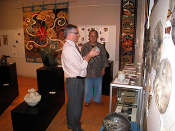

| 【サイモン・ケイナー博士（写真右）と猪風来（写真左）】 |
今年（平成２２年）８月、猪風来はイングランドのノリッジ市で開催された[Unearthed]（発掘展）に関連した
ワークショップへの出席のため、セインズベリー日本藝術研究所より英国に招待され、行ってまいりました。
セインズベリー日本藝術研究所は、日英の文化芸術交流を深める諸活動を行っている学術研究機関。
サイモン・ケイナー博士は同研究所の副所長であり、大英博物館やノリッジでの土偶展のディレクターを務めま
した。
ワークショップの際にはいくつかの作品とスライドをイギリスへ持参し、猪風来講演を行いました。
その後ケイナー博士より「美術館に展示されているもっと多くの作品を直に見たい」との希望があり、今回の
訪日の際に実現することとなりました。
|  |
=∴=∵=∴=∵=∴=∵=∴=∵=∴=∵=∴=∵=∴=∵=∴=∵=∴=∵=∴=∵=∴=∵=∴=∵=∴=∵=∴=
イギリスのセインズベリー日本芸術研究所のサイモン・ケイナー副所長(48)が17日、法曽の猪風来美術館を訪れ、
所蔵作品を見学した。
サイモン副所長は8月にイギリスで開催された土偶展に、同館長で縄文造形作家の猪風来さん(61)を招待。これを
きっかけに交流が深まり「作品を直接、見せてほしい」と申し出ていた。
日本の学術会議出席後、来館したサイモン副所長は、猪風来さんの案内で大型レリーフ「縄文の太陽」(縦90㌢、
横5㍍40㌢)など大小200点の作品を見て回った＝写真右。(※元記事中)
サイモン副所長は「縄文時代を思い起こさせる作品が多く、芸術的価値は高い。将来、日英の芸術家の合同展を
イギリスで開きたい」と流ちょうな日本語で話した。
猪風来さんは「土偶展でも賛辞を受け、とても感激している。これを機に新たな創作活動に取り組みたい」と
語った。
また、サイモン副所長は柴田副市長、藤野教育長、橋本吉弘新見美術館長と懇談。日英の美術館、芸術家同士の
交流構想などを語り合った。
（備北民報 10月25日記事）
=∴=∵=∴=∵=∴=∵=∴=∵=∴=∵=∴=∵=∴=∵=∴=∵=∴=∵=∴=∵=∴=∵=∴=∵=∴=∵=∴=
（サイモン・ケイナー博士）
「猪風来さんの作品は、自然や環境に対するメッセージを感じる。表現技法も土器、陶器、磁器、絵画と多岐に
わたり、実に多様性のある芸術家だ」
「また、妻・美子さんのタペストリーと一緒に見ると、とても『あったか－いスピリット』を感じます」
（猪風来）
「イギリスは気候、風土もよく、とても良いところだ。また、私の芸術を受け容れ高く評価していただいた。機会
あればイギリスへ再び行って向こうで創作してみたい。法曽の地を世界に発信する拠点とし、イギリスをヨーロッ
パへの発信と創作の場に考えたい」
【関連記事】